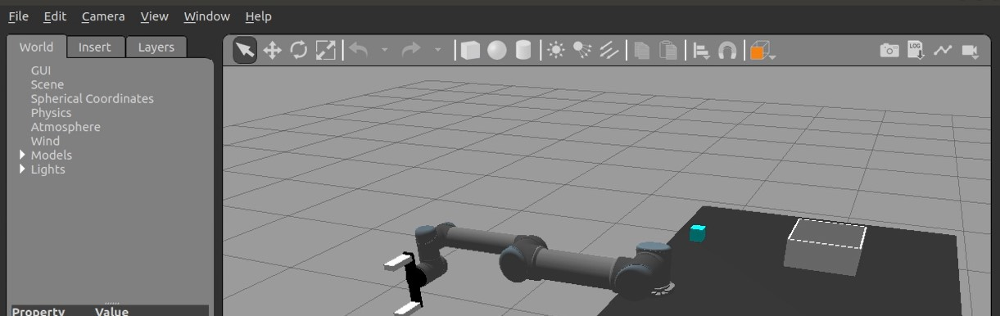

This project resulted in a real-time arm and hand tracking system for robot control using Google's Mediapipe framework integrated with ROS1. Built with my friends Stefan Hustrulid and Baldur Hua at Johns Hopkins University in Spring 2024, our goal was to create a system that maps a user's physical arm movements and finger gestures to the motion of a UR5 robot in simulation, without needing any hardware beyond a webcam. The system uses the hip and wrist landmarks from Mediapipe's pose model to define a 6DOF transform and then computes inverse kinematics on the UR5 to follow that motion. Gripper control is handled using a hand-gesture heuristic based on Mediapipe's hand landmarks, allowing the user to open and close the gripper by flexing their fingers. All ROS communication is done either natively or over websockets, enabling cross-version or cross-machine control.
While the simulation focus was on Gazebo and basic pick-and-place tasks, the project’s broader applications include remote robot teleoperation, low-cost VR training for machine operation and surgery, and interactive control systems for games and education. The system emphasizes simplicity and accessibility—running on a standard laptop with a webcam and supporting both full robot control and visualization out of the box. We deliberately avoided expensive motion tracking systems and instead built an entire ROS control stack that can be driven by your body alone. The kinematics are implemented from scratch using geometric twists, Jacobians, and Broyden’s method to convert the transform stream into real robot joint angles.
ROS Melodic
ROS Melodic on Ubuntu 18.04 - ros.org.
If you're unfamilar with ROS, the high-level description is that it is a framework for building robotics applications. It is a collection of tools and libraries that allow you to build complex robotic systems. The ROS ecosystem includes a variety of packages that can be used to create robots, sensors, and other robotic systems.
ROS1 Melodic is a version of ROS that is widely used in robotics research and development. It's certainly more dated now, but is good for learning and has a lot of documentation.
ROS2 is a newer version of ROS that is becoming more widely used. It is designed to be more flexible and scalable than ROS1.
Rviz is a popular visualization tool that can be used to display and interact with robotic systems.
Gazebo is a popular open-source robot physics simulator that can be used to create and test robotic systems which we'll look at in more detail later.
At the kick off of this project, a distribution with a ur5 simulation on ROS-melodic was already readily available on our research machines so we decided to use that as our base. In the future, I may consider porting this to ROS2, but for now, we will focus on the ROS1 implementation.
To support this project, we used a standard ROS1 catkin workspace structure organized under `cv_workspace`. Inside the `src/cv_ur5_project/` directory, the core functionality is distributed across ROS packages, URDF/Xacro robot descriptions, YAML controller configs, and a collection of Python scripts handling joint control, transforms, and vision integration. Launch files were used extensively to bring up modular systems—one for the robot model and controllers, another for Rviz, and another for utility nodes like joint state publishers. These `.launch` files allow modular and repeatable startup sequences with ROS parameters passed through XML syntax and dynamic reconfiguration.
UR5 Robot.
To interface Mediapipe's Python 3 codebase with the Python 2.7 ROS system (Mediapipe requires Python3.7+), we relied on the `rosbridge_websocket` package to send messages across the version divide. This enabled us to run vision processing with modern Python libraries while still publishing ROS-compatible topics. We extended and refactored the `CMakeLists.txt` and `package.xml` files to include dependencies like `rospy`, `sensor_msgs`, `geometry_msgs`, and custom scripts such as `ur5_FKandJacob.py`. Building the project required `catkin_make` and properly sourcing the environment. The UR5's kinematic model, defined using URDF and mesh files, tied the simulation back to real-world robot behavior, ensuring our custom inverse kinematics solutions matched ROS's joint state conventions. Overall, the workspace was structured for modularity, simulation speed, and easy integration with external Python3-based tools.
As I breifly mentioned, we are using a model of a ur5 with a robotiq end effector as our simulation robot. All the forward kinematics, jacobian, and inverse kinematics were solved by me by hand using basic robotics mathematics tools (DH parameters, screws and exponential twists, etc.) prior to the start of this project. See my other robotics project to see my typical approach to solving this.
All the details on how to build this ROS workspace can be found in the README file on the github page. This discusses the cv_workspace, dependencies, and what each file does.
And of course how to build and run the project.
Gazebo and Mimic Plugin
Gazebo was used as the physics simulation environment for this project, allowing us to model the UR5 robot, gripper, table, camera, and cube with full collision and dynamic behavior. The simulation environment mimics a basic pick-and-place task, where a blue cube starts on the table and can be manipulated using the robot’s gripper under control of the Mediapipe-derived motion data. The world model is kept simple for performance, but the physical properties like mass, friction, and gravity are modeled realistically enough to allow accurate behavior of the robot arm under trajectory control.

Gazebo Simulation.
To enable finger-level actuation of the robot’s end effector in simulation, we used the roboticsgroup_gazebo_plugins package, specifically its MimicJointPlugin. This plugin synchronizes the motion of the parallel gripper’s joints, allowing the simulated gripper to actually pick up objects and close symmetrically from a single effort command. URDF and Xacro files for the gripper, table, and cube are included in the project, and the launch files load them into the Gazebo environment during simulation. Combined with joint effort controllers defined in YAML, the system allows users to see real-time interaction between the robot and environment, test grasping strategies, and debug kinematics—all without touching physical hardware. The result is a full loop: vision in Python3 drives transforms, which update robot motion in ROS, which gets visualized and verified in Gazebo.
Fig.2 Mediapipe Logo - chuoling.github.io/mediapipe/ . Pose Tracking Demo Hand Tracking Demo
Mediapipe for Pose and Hand Tracking
The integration of Mediapipe into our ROS-based control system enables fast (If your hardware can keep up), markerless tracking of human pose and hand landmarks for robot manipulation. Mediapipe uses a single webcam to extract full-body landmarks in real time, allowing us to infer arm pose and hand gestures without any external sensors. In this system, we use the wrist and hip positions to compute a 6DOF transform, which serves as the target pose for a UR5 robot. This transform is translated into joint commands using custom inverse kinematics solvers written from scratch. The hand landmarks allow us to estimate finger curl and drive the robot gripper open or closed accordingly, making for an intuitive and hardware-free control scheme.
This method of pose-driven control eliminates the need for expensive tracking systems, making it ideal for teleoperation, training simulations, or immersive robot interfaces. The integration with ROS allows full use of Gazebo physics, Rviz visualization, and existing robot control stacks. Users can run the system out of the box on a laptop with a webcam and control a simulated robot arm using nothing but their own hand and arm motion. Combined with websocket communication and our Python GUI, this setup is adaptable to many use cases including surgical training, VR prototyping, or remote robot manipulation in constrained environments.
Pose and Hand Tracking in Python
To implement the pose and hand tracking functionality, we use the mediapipe library in Python. This library provides pre-trained models for detecting human pose and hand landmarks, which we can use to extract the necessary information for controlling the UR5 robot. The code snippet below shows how we initialize the mediapipe pose and hand solutions:
In conjunction with OpenCV, we can process each frame with the given Mediapipe landmarks in pose and hands to extract what position and orientation the wrist is in relative to the hip.
while cap.isOpened():
ret, frame = cap.read()
if not ret:
break
frame_rgb = cv2.cvtColor(frame, cv2.COLOR_BGR2RGB)
pose_results = pose.process(frame_rgb)
if not pose_results.pose_world_landmarks:
continue
hip_pos = pose_results.pose_world_landmarks.landmark[R_Hip]
wrist_pos = pose_results.pose_world_landmarks.landmark[R_Wrist]
#... code for interpreting the landmarks and calculating the transform ...
Simultaneousley, we observe the hand landmarks and pose estimation in an OpenCV window to verify tracking is working properly. This GUI also displays the estimated transform position and orientation for writst to hip.
Fig.3 Hand TrackingFig.4 Pose Tracking
My machine struggles to keep up with the real-time processing of the video stream, while communicating with ROS and Gazebo on the Web socket. Because of this, the simulation moves much slower than it would on a system with a deadicated GPU and linux OS (I am using VM workstation for Ubuntu 18.04 on Windows 10).
So to preserve loop rate fidelity, I don't draw every finger joint in the final version of the GUI, but the background processing is still done on the hand landmarks.
The hand state is classified by checking the distance between the thumb and index finger. If they are close together this means the hand is closed and vice versa.
This state is published to the ROS topic /gripper_condition
The pose state is classified by checking the distance between the wrist and hip. The hip is mapped to the origin of the UR5 robot, and the wrist is mapped to the goal pose end effector.
The relation is defined as 6DOF homogeneous transform that is published to the ROS topic /mediapipe_transform.
However this is not a perfect 1:1 mapping. The ur5 is longer than a typical human arm, and human arms differ in length. To compensate for this, we included a scaling factor the user can adjust that scales amount of movement in the X, Y, and Z directions.
The array 'scaling' has 3 respective values that a user can tune in ur5_arm_vision_2_trans_and_grip_python3_talker.py to make movement of the ur5 feel more natural and within a comfortable range for the users task.
For example, if the user needs the ur5 to move more in the x direction, they can increase the value of scaling[0] in the array to 2 for instance. This means that the ur5 will move twice as far in the x direction for every 1 unit of distance the wrist moves from the hip.
UR5 Trajectory IK
The most technically rigorous aspect of the robot control was the motion planning via IK. A robust algorithm that prevents jumping, avoids singularities, and ensures smooth motion is Broyden’s method.
Broyden's method is a numerical method for solving nonlinear equations, which we adapted to compute the inverse kinematics of the UR5 robot. The method iteratively refines an initial guess for the joint angles until the end effector's position matches the desired target pose derived from the Mediapipe landmarks.
This is done via the damped pseudo-inverse of the Jacobian matrix where Broyden's method is introducing this dampng term to prevent the algorithm from jumping around. The damping term is a scalar that is added to the diagonal elements of the Jacobian matrix, which helps to stabilize the solution and prevents the algorithm from getting stuck in local minima.
In our system, the robot's joint angles q are calculated using inverse kinematics (IK) by aligning the robot's end effector pose with a desired transform from the user's hand.
Since the UR5 robot’s forward kinematics are nonlinear, we can’t directly compute joint angles from a desired pose. Instead, we use a quasi-Newton iterative solver: Broyden’s method.
Broyden’s method solves the nonlinear equation:
Here:
q is the 6×1 vector of UR5 joint angles
T(q) is the forward kinematics output pose
Tdesired is the target hand pose from Mediapipe
F(q) is the pose error (both position and rotation)
Because calculating the true Jacobian J = ∂F/∂q at each step is costly or analytically complex, we use Broyden’s method to iteratively approximate the Jacobian:
Where:
Bk is the current Jacobian approximation
s = qk+1 - qk is the change in joint angles
y = F(qk+1) - F(qk) is the change in pose error
⊗ denotes the outer product
Damping for Stability
Near singular configurations or extreme joint limits, a direct inverse of the Jacobian can cause instability or large jumps. To handle this, we use damped least squares:
Where:
Δq is the update to joint angles
J is the Jacobian (or Bk)
λ is the damping factor (tunable)
I is the identity matrix
Damping helps the solver remain stable and prevents joint velocity spikes, especially when the pose error is small or the Jacobian is ill-conditioned.
We apply these updates frame-by-frame as the user moves, so the inverse kinematics solver runs in real-time and smoothly adapts to the user’s right-hand position and orientation. The result is a responsive and natural motion tracking experience that mimics human movement while maintaining numerical safety.
UR5 Visual Hand Control With Mediapipe
It all works! With a faster computer it would work even better.
Here is a video of the UR5 robot being controlled by a webcam and mediapipe. The user is moving their hand in front of the camera, and the robot is following the motion of the hand. The gripper is also being controlled by the hand gesture.
Resources
A special thanks again to Stefan Hustrulid and Baldur Hua for their contributions to this project.
All source code for this project and steps on how to run it can be found on my github page.